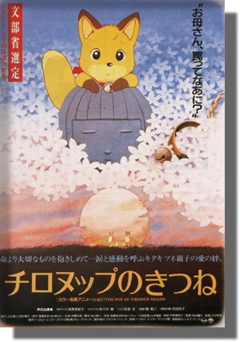
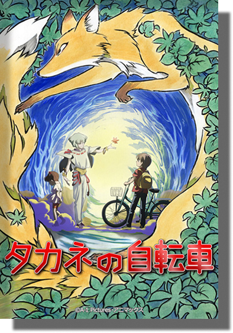
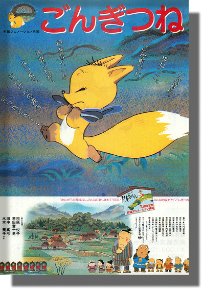
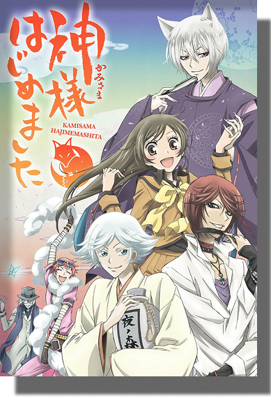
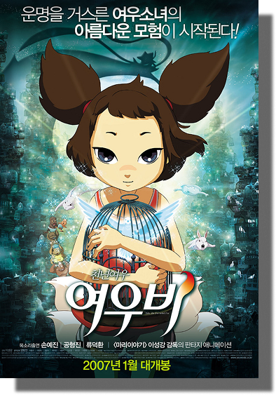

ГЛАВНАЯ
СТРОЕНИЕ
СРЕДА ОБИТАНИЯ
ПИТАНИЕ И ВРАГИ
О КИЦУНЭ
СЛЕД В ИСКУССТВЕ
СЛЕД В ИСКУССТВЕ
Лиса — это не просто животное в дикой природе
Это мощный символ, который нашел отражение в искусстве на протяжении веков

Лисы Тиронул

Велосипед Таканэ

Лисёнок Гон

Очень приятно, Бог

Девочка-лисичка